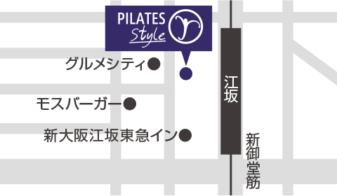

basiピラティスシニアファカルティSheri longによる高齢者への指導の講座です
皆さんは、自己実践をしていて、果たしてこれでやっていていいのかしら？
これで、正確に動けているのかしら？
と思うことはないでしょうか？
もちろんプライベート受けることも有効ですが、日々の実践の精度を高めることも大変重要ですね。
そこで今回はシェリーにこの点にフォーカスしたWSをお願いしました。
参加される方は、ご自分の自己実践の中で、もっと精度を高めたいと日頃から思っているエクササイズを１つか２つか３つ（いくつできるかは当日の進行で決まりますが）持ってきてください。
実際に当日ご自分でやっているところを、シェリーに見てもらい修正やアドバイスをもらいます。
マット、マシンどちらでも大丈夫です。
スタジオスケジュール・お電話にてお申込みいただけます。

世界中で高齢者の指導をしているSheri Long。
マットの指導では限界があると考えられ、通常はMachineで指導を行う事を選択する「高齢者への指導」。
今回は、あえてMatのみでどのようにして効果的に指導をしていくのか…。
6時間み～っちり学びます。
年をとることは、アクティブなライフスタイルを諦めることを意味するわけではありません。
ピラティスは老年人口を活発に保つのに役立ちます。
しかし、彼らに指導するインストラクターは高齢のクライアントの制限や限界を十分に理解していなければなりません。
このワークショップでは、可動性、強さ、持久力、バランスと心の刺激など、高齢者の特定のニーズについて議論し、探求していきます。
高齢者のニーズを満たす安全かつ適切なマットクラスやセッションを指導するために、BASIのマットワークのモディフィケーションやバリエーションを多くご紹介します。
虚弱高齢者のニーズについてもご説明します。
ワークショップの中で、バリエーションで構成したマットクラスを参加者の皆さんに体験していただきます。
メール・お電話にてお申込みいただけます。

03-6409-6504
【平日】9:00〜19:00
※メール・お電話でのお申込み後、こちらよりお振込のご案内をいたします。

世界中で高齢者の指導をしているSheri Long。
マットの指導では限界があると考えられ、通常はMachineで指導を行う事を選択する「高齢者への指導」。
今回は、あえてMatのみでどのようにして効果的に指導をしていくのか…。
6時間み～っちり学びます。
年をとることは、アクティブなライフスタイルを諦めることを意味するわけではありません。
ピラティスは老年人口を活発に保つのに役立ちます。
しかし、彼らに指導するインストラクターは高齢のクライアントの制限や限界を十分に理解していなければなりません。
このワークショップでは、可動性、強さ、持久力、バランスと心の刺激など、高齢者の特定のニーズについて議論し、探求していきます。
高齢者のニーズを満たす安全かつ適切なマットクラスやセッションを指導するために、BASIのマットワークのモディフィケーションやバリエーションを多くご紹介します。
虚弱高齢者のニーズについてもご説明します。
ワークショップの中で、バリエーションで構成したマットクラスを参加者の皆さんに体験していただきます。
メール・お電話にてお申込みいただけます。
03-6409-6504
【平日】9:00〜19:00
※メール・お電話でのお申込み後、こちらよりお振込のご案内をいたします。
